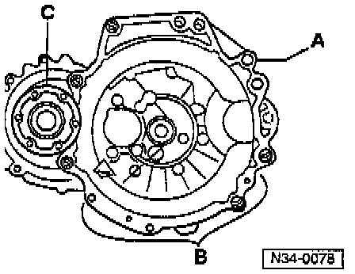
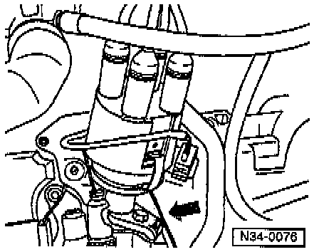
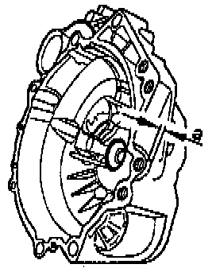

Modified Transmission Case (Clutch Housing)
MODIFIED CLUTCH HOUSINGFrom Transmission Number (Production Date) 13 09 3

- On some transmissions, there is an additional mounting hole -A- on the engine/transmission flange, above the starter mounting.
- The flywheel cover plate and the mounting holes for the cover plate have been modified at the bottom -B- and in the area of the drive flange -C-.
NOTE: The additional mounting hole is not required for vehicles with earlier engines.
- When installing a transmission with the modified clutch housing, always use the new flywheel cover plate.
- When replacing the transmission or the clutch housing, note the following:

- On engines up to approx. September 1993 production, the casting for the additional mounting hole may interfere with the distributor hold-down clamp -arrow- on gasoline spark-ignition engines, or with the vacuum pump on Diesel engines.

- The hold-down clamp has been modified from approx. September 1993 production.
- Identification:
I - Hold-down with extension; up to
II - Shortened hold-down; from September 1993

- When installing a transmission with the modified clutch housing on an engine with the older style hold-down, saw off the casting as shown.
- Dimension -a- = 4 mm (0.16 inch)
NOTE: Cover the transmission input shaft oil seal before sawing.